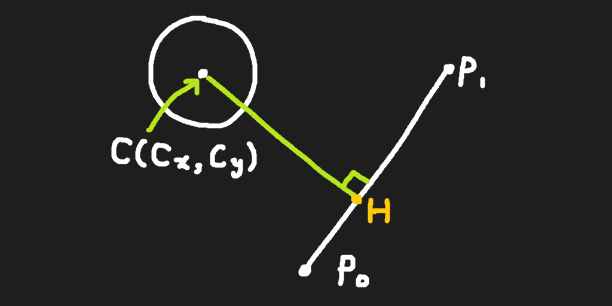

C 원의 중심
P_0 선분의 시점
P_1 선분의 종점
H 원의 중심에서 선분 사이 수선의 발
위 좌표가 벡터로 표현될 때
① (C - P_0) ⋅ (P_1 - P_0)
② (C - P_0) ⋅ (P_1 - P_0)
여기서 ① / ② 의 값을 T라고 할 때
T가 0보다 작을 경우 H는 P_0의 바깥 방향으로 벗어난다.따라서 ① / ② 의 값이 0에서 1 사이일 때 충돌할 수 있다.
T가 0일 경우 P_0이 수선의 발이다.
T가 1일 경우 P_1이 수선의 발이다.
T가 1보다 클 경우 H는 P_1의 바깥 방향으로 벗어난다.
T가 0에서 1 사이일 때 수선의 발은 선분 위에 있다.